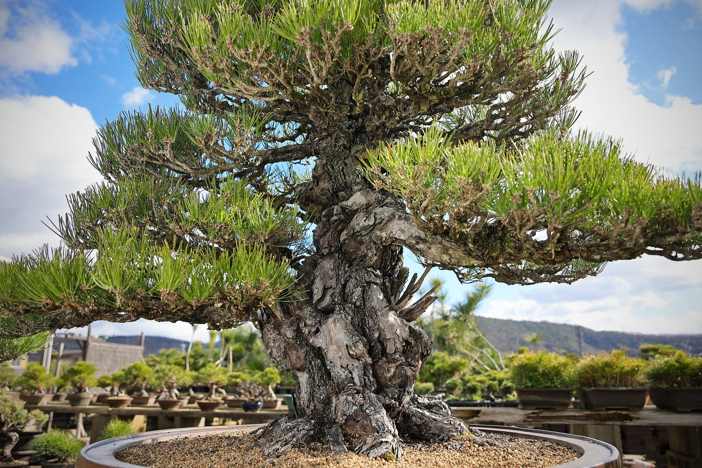
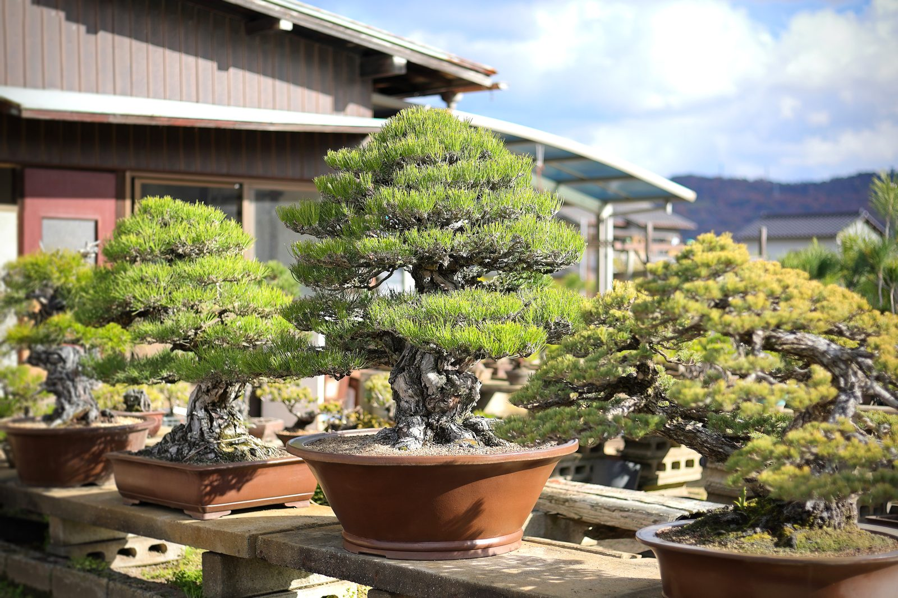
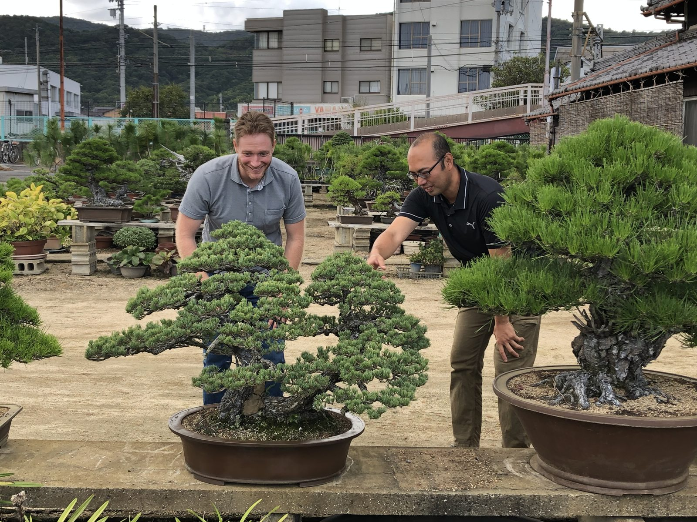
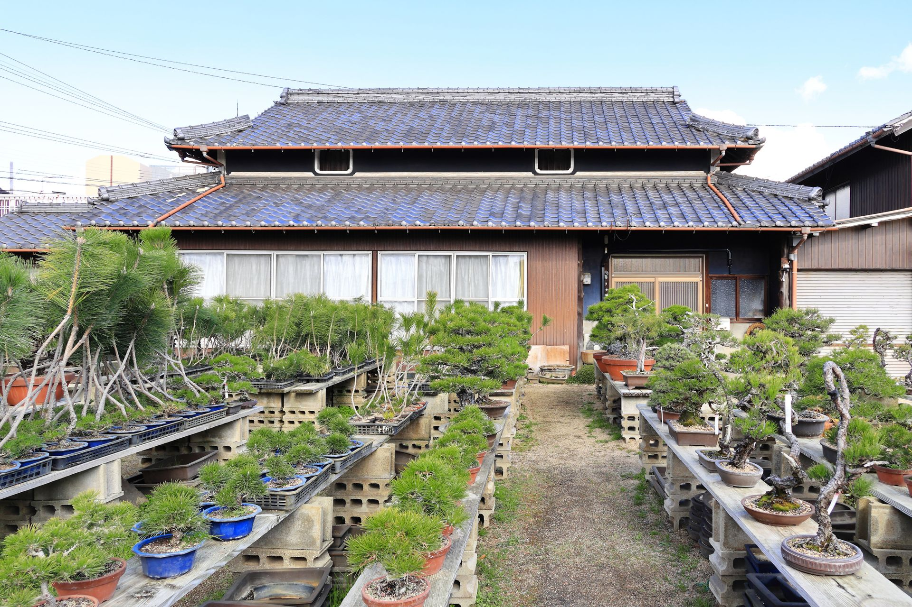
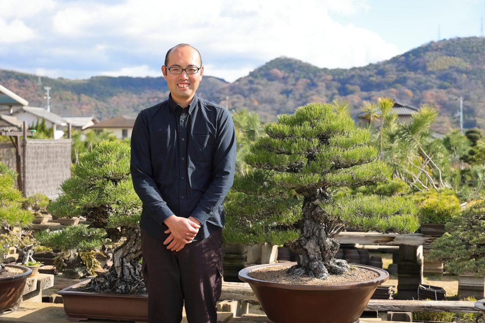

樹が刻んだ時間に触れる
なぜ、この一鉢は美しいのか。
職人の棚場で、盆栽の見方と価値の理由を知り、
自分の一鉢を迎える2時間です。
迎えたあとの3ヶ月も、ひとりにしません。
盆栽の歴史や、美しさの理由を知ると、
これまで同じに見えていた一鉢一鉢が違って見えてきます。
その見方を職人から教わり、
自分の一鉢を迎える体験です。
壱
なぜ高いのか。どこを見ればよいのか。職人の評価軸に触れます。
弐
高松・鬼無で、数千本の樹と職人の仕事に触れます。
参
知った上で一鉢を選び、自分の暮らしへ持ち帰ります。
肆
お引き渡しから3ヶ月、職人が写真で見守ります。
樹齢が古ければ、それだけで価値があるわけではありません。
幹、根張り、枝ぶり、年月、職人の手。
一鉢の価値は、いくつもの要素が重なって生まれます。
体験では、実際の盆栽を見比べながら、
職人がどこを見て価値を判断しているのかをご案内します。

幹の立ち上がり、根張り、枝の運び。見るべき箇所があります。

お持ち帰りのあと
「枯らしてしまいそうで」——
盆栽に関心はあっても、その一点で手が出せない。
そう感じる方は、少なくありません。
だからこの体験には、お引き渡しから3ヶ月、
職人が見守る期間を含めています。
置き場所と水やりのリズムをつかむまでを、ひとりにしないためです。
葉の色が変わった、元気がない気がする。そう感じたら写真をお送りください。職人が状態を確認し、対応をご案内します。
ご自宅での回復が難しいと判断した場合、棚場でお預かりし、日々の観察と水やりで様子を見たうえでお返しします。
ひとりで枯らさないために、
この3ヶ月があります。
※お預かりの際の送料は、お客さまのご負担となります。
※お預かり中の日々の観察と水やりに、追加の費用はいただきません。植え替え、施肥、菌や害虫への対応など特別な作業が必要な場合は、北谷養盛園より別途お見積もりのうえご相談します。
※盆栽は生き物のため、状態によっては回復しないこともあり、枯れないことをお約束するものではありません。日々の水やりなど基本的な管理は、お客さまにお願いしております。


北谷養盛園 4代目
高松・鬼無で、親子7,000本以上の松盆栽を管理。
四代にわたり受け継がれてきた棚場で、樹と向き合う日々のなかから、一鉢の価値、美しさ、見どころをわかりやすくご案内します。
企画：Bonsai Agency 玉井謙二
| 参加費 | 30,000円（税込） お持ち帰りの一鉢と、お引き渡しから3ヶ月の見守り（「最初の一季」）を含みます。 |
|---|---|
| 所要時間 | 約2時間 |
| 定員 | 各回2〜4名 |
| 開催頻度 | 月1回（事前予約制） |
| 開催場所 | 北谷養盛園 香川県高松市鬼無町藤井36-1 |
| お持ち帰り | 園内にある対象盆栽の中から、ご自宅の置き場所、日当たり、水やりの環境などを確認し、北谷隆一氏と相談しながら一鉢をお選びいただきます。 |
| サポート | お引き渡しから3ヶ月間（「最初の一季」）。写真によるご相談と、必要に応じたお預かり対応を含みます。 |
高松盆栽の歴史の解説、盆栽格付け体験、職人による棚場のご案内、
お持ち帰りの一鉢、最初の一季の見守りを含みます。
なぜ、この一鉢は美しいのか。
その答えを、職人の棚場で。
※お持ち帰りいただく盆栽の樹種や樹形は、お選びいただく時期により異なります。
※盆栽は生き物のため、状態や安全について完全に保証するものではありません。
※日々の水やりなど基本的な管理は、お客さまに行っていただきます。
※植え替え、施肥、消毒、菌や害虫への対応など専門的な手当てが必要な場合は、北谷養盛園より別途お見積もりいたします。